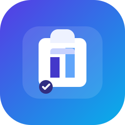

Extension settings
Choose which Verlocity API the extension should use.
API connection
Use the production API by default or point the extension at a local backend while developing.

Extension settings
Use the production API by default or point the extension at a local backend while developing.